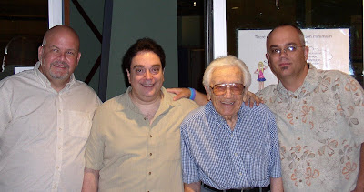

Att: San Antonio
10/30/2010
From Charles Prouty:
Hey Clinton, I just wanted to share with you an opportunity I had this past Wednesday. The one and only Pete Michaels is performing this week in San Antonio. Ian (Varella) invited me to join him in picking up Pete at the airport and then to have lunch. After dropping Pete off at the condo he is staying at, we went to pick up Peter Rich for the show. Pete is awesome on stage, and although it was a small audience, he had us laughing so hard we could hardly breathe.
I would strongly recommend anyone in the central Texas area to go see Pete's show. He is performing at the River City Comedy Club through Sunday night.
Hey Clinton, I just wanted to share with you an opportunity I had this past Wednesday. The one and only Pete Michaels is performing this week in San Antonio. Ian (Varella) invited me to join him in picking up Pete at the airport and then to have lunch. After dropping Pete off at the condo he is staying at, we went to pick up Peter Rich for the show. Pete is awesome on stage, and although it was a small audience, he had us laughing so hard we could hardly breathe.
I would strongly recommend anyone in the central Texas area to go see Pete's show. He is performing at the River City Comedy Club through Sunday night.

L-R: Ian Varella, Pete Michaels, Peter Rich, Charles Prouty